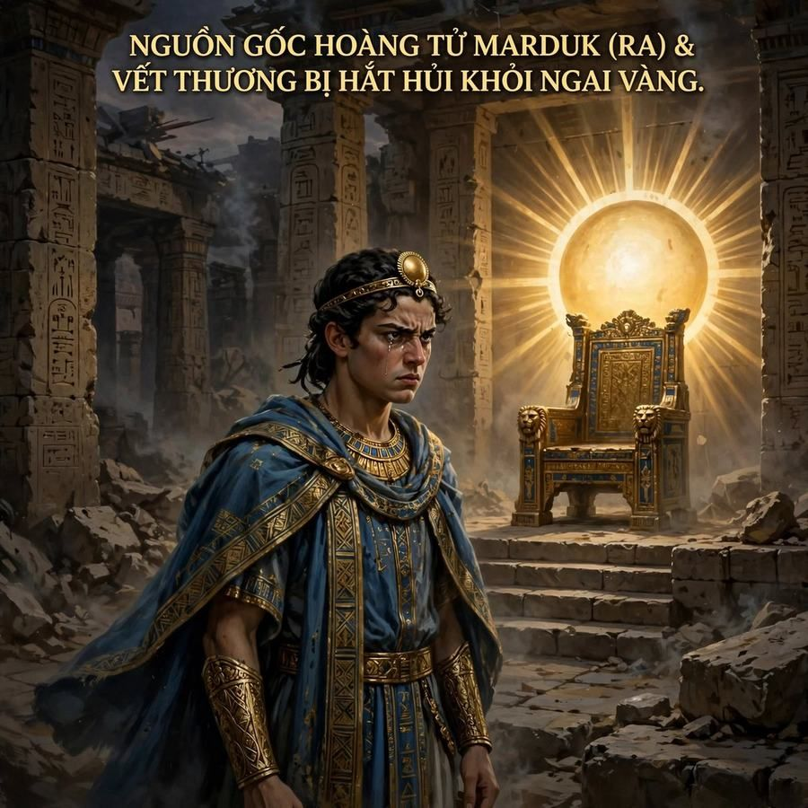
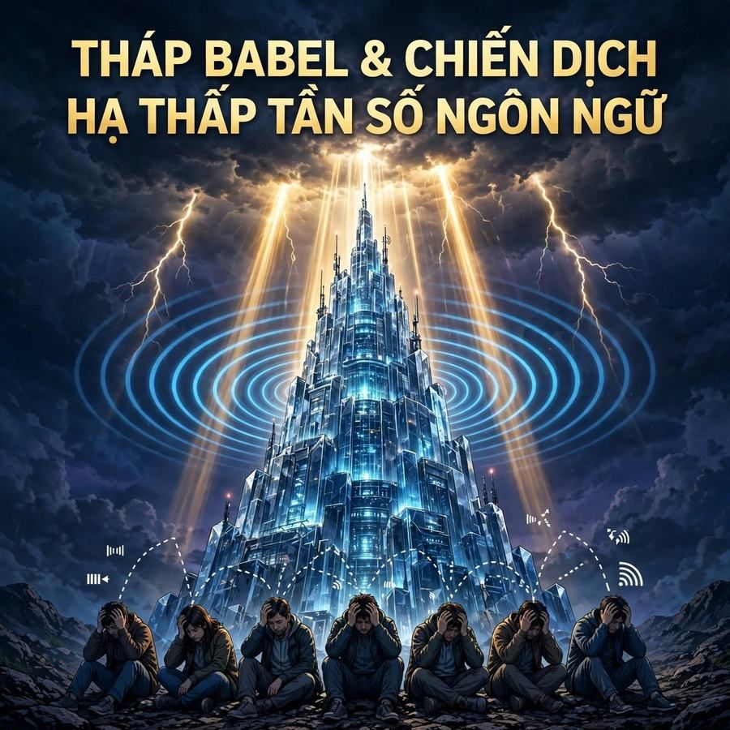
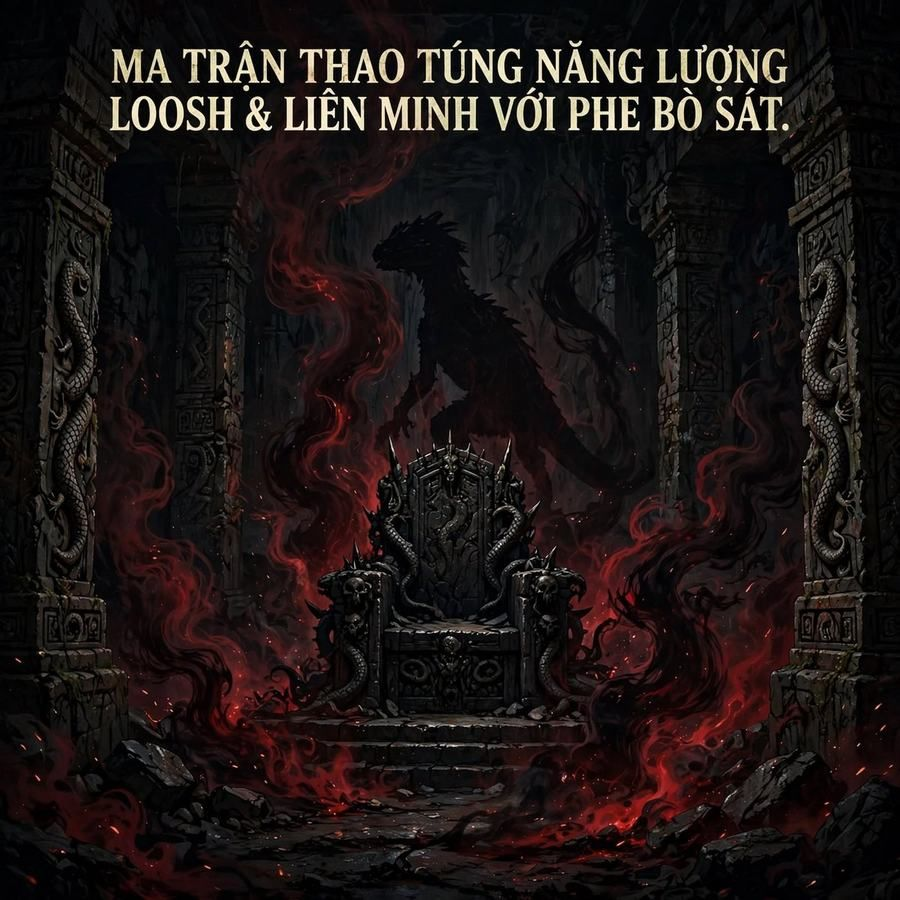
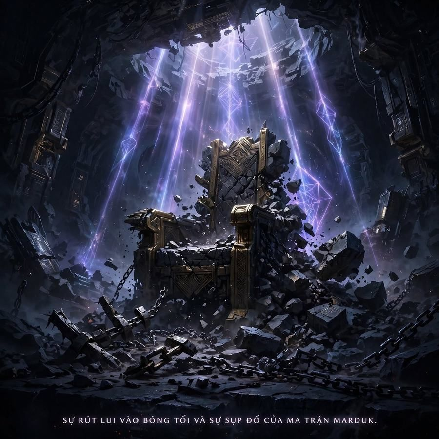
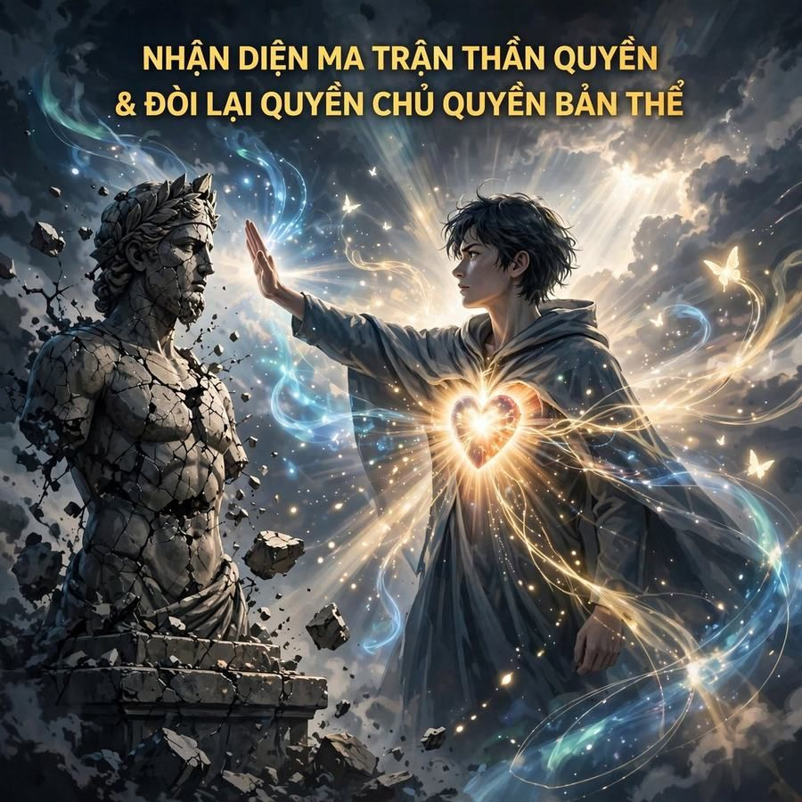

Trang chủ / Chuyên đề 3: Dòng Máu Anunnaki / Kỳ 27
Chuyên đề 3 · Kỳ 27 / 90
SỰ THẬT VỀ MARDUK (RA), BABYLON VÀ CUỘC CHIẾN THÂU TÓM MA TRẬN TÂM LINH

Ở Kỳ 6, chúng ta đã chứng kiến bức tranh rực rỡ về sự trở lại chính thức của Hoàng tử Enki (Ea) cùng hạm đội Liên minh các Đấng Sáng Lập, mang theo "Chén Thánh" — mẫu di truyền 12 chuỗi DNA nguyên bản — để khởi động quá trình tháo gỡ lưới phong tỏa 3D và khôi phục lại di sản thần thánh cho loài người Trái Đất.
Tuy nhiên, để thấu hiểu tường tận tại sao hệ thống kiểm soát nhận thức và bộ máy tôn giáo giáo điều lại có thể cắm rễ sâu thẫm vào xã hội nhân loại suốt hàng ngàn năm qua, chúng ta không thể không giải mã nhân vật gây tranh cãi và quyền lực bậc nhất trong gia tộc Anunnaki: Hoàng tử Marduk (hay Thần Ra trong thần thoại Ai Cập).
Marduk là ai? Lý do gì khiến người con trai trưởng của Hoàng tử Enki lại rẽ sang một con đường hoàn toàn trái ngược với người cha từ bi của mình? Thảm họa Tháp Babel và sự "làm rối loạn ngôn ngữ" thực chất là một chiến dịch thao túng tần số thần giao cách cảm ra sao? Làm thế nào mà Marduk đã liên minh với các thế lực Bò sát để biến niềm tin tôn giáo thành một bộ máy thu hoạch năng lượng sợ hãi (Loosh)? Và bài học thức tỉnh nào giúp chúng ta nhận diện các "vị thần giả tạo" để đòi lại quyền chủ quyền tâm linh tối cao?
Hãy cùng dấn thân vào Kỳ 7: Sự Thật Về Marduk (Ra), Babylon & Cuộc Chiến Thâu Tóm Ma Trận Tâm Linh để khai quật bức màn bí mật đen tối nhất trong lịch sử cổ đại!
✦ ✦ ✦1. NGUỒN GỐC HOÀNG TỬ MARDUK (RA) & VẾT THƯƠNG TÂM LÝ BỊ HẮT HỦI KHỎI NGAY VÀNG
Để thấu hiểu tâm lý khao khát quyền lực tuyệt đối của Marduk, trước hết chúng ta phải nhìn vào vị thế địa chính trị của ông trong gia tộc Hoàng gia Anunnaki.
A. Hoàng Tử Mang Hai Dòng Máu Quý Tộc
- Con Trai Đẩu Lòng Của Enki: Marduk là con trai trưởng của Hoàng tử Enki với Công chúa Damkina. Ông sở hữu trí tuệ di truyền kiệt xuất, khả năng lãnh đạo bẩm sinh và hiểu biết sâu sắc về khoa học năng lượng từ cha mình.
- Danh Xưng Thần Ra Tại Ai Cập: Tại vùng đất Khem (Ai Cập cổ đại), Marduk được biết đến với tên gọi Thần Ra (hay Amun-Ra) — vị Thần Mặt Trời tối cao mang biểu tượng đĩa mặt trời và con mắt Horus.
B. Vết Thương Bị Tước Bỏ Quyền Thừa Kế
- Sự Bất Công Trong Luật Thừa Kế Nibiru: Mặc dù Enki là con trai đầu lòng của Thần Anu và Marduk là cháu nội đích tôn đầu tiên, nhưng theo luật thừa kế độc đoán của Anunnaki, ngai vàng Nibiru lại thuộc về Enlil (và sau đó là Ninurta) vì Enlil là con của Nữ hoàng chính thất Antu.
- Ngọn Lửa Phẫn Nộ Kéo Dài: Marduk luôn cảm thấy gia tộc Enki của mình bị chèn ép bất công. Thất vọng trước sự ôn hòa của cha, Marduk đã quyết định tự đi theo con đường riêng: Dùng sức mạnh, sự thao túng và quyền lực tuyệt đối để thâu tóm Trái Đất, biến mình thành Vị Thần Tối Cao duy nhất!

2. THÁP BABEL & CHIẾN DỊCH HẠ THẤP TẦN SỐ NGHÔN NGỮ CON NGƯỜI
Một trong những sự kiện lịch sử nổi tiếng nhất liên quan đến tham vọng của Marduk chính là việc xây dựng đại đô thị Babylon và công trình Tháp Babel (Etemenanki).
A. Tháp Babel — Cổng Truyền Dẫn Tần Số & Cổng Sao Địa Từ
- Không Phải Công Trình Bằng Gạch Thô: Tháp Babel không đơn thuần là một ngọn tháp gạch cao vút như truyền thuyết dân gian miêu tả. Đó là một Tháp Ăng-ten Tinh thể & Cổng Sao Nhân Tạo (Dimensional Gateway) được xây dựng ngay trên một chấn điểm địa từ (Ley Line Node) cực mạnh tại Babylon.
- Ý Đồ Của Marduk: Marduk muốn sử dụng Tháp Babel để tạo ra một cổng truyền dẫn từ trường nối thẳng với các chiến hạm của ông trên không trung, đồng thời thiết lập một mạng lưới phủ sóng năng lượng toàn cầu để tuyên bố chủ quyền tuyệt đối trên Trái Đất.
B. Sự Can Thiệp Của Phe Enlil: "Làm Rối Loạn Ngôn Ngữ"
- Bản Chất Của Sự "Rối Loạn Ngôn Ngữ": Trước sự kiện Tháp Babel, toàn bộ loài người Adamu giao tiếp với nhau bằng Cổ ngữ Tần số Taami và Thần giao cách cảm (Telepathy) — nơi ý niệm được truyền đi trực tiếp từ tâm trí đến tâm trí mà không thể bị lừa dối.
- Hạ Thấp Dải Tần SỐ Sóng Não: Để phá hủy kế hoạch của Marduk, phe Enlil đã phóng ra các dải xung điện từ cực mạnh từ không trung xuống Tháp Babel. Dải xung này đã làm tê liệt khả năng thần giao cách cảm tự nhiên của con người, ngắt kết nối dải sóng não Theta/Gamma và cưỡng ép não bộ con người phải giam mình trong ngôn ngữ âm thanh thô ráp (3D Vocal Languages).
- Khai Sinh Sự Chia Rẽ Loài Người: Khi thần giao cách cảm bị ngắt kết nối và loài người bị phân rã thành hàng ngàn ngôn ngữ âm thanh khác nhau, sự hiểu lầm, nghi ngờ và chiến tranh giữa các bộ tộc con người bắt đầu bùng nổ dữ dội!

3. MA TRẬN THÂO TÚNG NĂNG LƯỢNG LOOSH & SỰ LIÊN MINH VỚI PHE BÒ SÁT CIAKAHRR
Để củng cố quyền lực tối cao chống lại cả phe Enlil lẫn Liên minh Paa-Taal, Marduk đã đưa ra một quyết định tàn khốc: Ký kết thỏa thuận ngầm với các thế lực Bò sát Ciakahrr và người Xám tiêu cực.
A. Thiết Lập Hệ Thống Tôn Giáo Thần Quyền & Đòi Hỏi Sự Hiến Tế
- Tự Biến Mình Thành "Vị Thần Tối Cao" (Bel/Marduk): Marduk bóp méo các tri thức giả kim thuật của cha mình, thiết lập nên các hệ thống tôn giáo giáo điều độc đoán. Ông ta yêu cầu con người phải xây dựng các đền thờ nguy nga, quỳ lụy thờ phụng và tiến hành các nghi lễ hiến tế đẫm máu.
- Cơ Chế Thu Hoạch Năng Lượng Loosh: Năng lượng sợ hãi, đau khổ và sự phục tùng cuồng nhiệt của hàng triệu con người trong các nghi lễ hiến tế tạo ra một dải năng lượng tần số thấp gọi là Loosh. Dải năng lượng này được thu hoạch qua các mạng lưới kiến trúc đền thờ để nuôi dưỡng ma trận Grid 3D và cung cấp sinh lực cho các thế lực Bò sát bóng tối.
B. Khai Sinh Giới Tinh Hoa Đen (The Cabals / Secret Societies)
- Mạng Lưới Thống Trị Từ Trong Bóng Tối: Marduk đã lựa chọn và huấn luyện một nhóm dòng họ cai trị loài người (mang tỷ lệ di truyền lai Anunnaki-Draco cao), thành lập nên các hội kín cổ đại.
- Thao Túng 3 Trụ Cột Xã Hội: Qua hàng ngàn năm, nhóm tinh hoa này được trao quyền kiểm soát 3 trụ cột thao túng nhân loại: Hệ thống Tài chính Tiền tệ (Nợ nần), Hệ thống Tôn giáo Giáo điều (Sợ hãi) và Các Cuộc Chiến Tranh Nhân Tạo (Chia rẽ)!

4. SỰ RÚT LUI VÀO BÓNG TỐI VÀ SỰ SỤP ĐỔ CỦA MA TRẬN MARDUK
Dù sở hữu bộ máy thao túng cực kỳ tinh vi, tham vọng của Marduk cuối cùng cũng phải đối mặt với quy luật tiến hóa của Đa Vũ trụ.
A. Sự Giam Cầm Và Rút Luôi Vào Thế Giới Ngầm
- Chiến Tranh Với Ninurta & Sự Cô Lập: Sau các vụ nổ hạt nhân tại Bán đảo Sinai và sự sụp đổ của Sumeria, Marduk bị Hội đồng Anunnaki cô lập. Ông ta buộc phải rút xuống các căn cứ ngầm sâu dưới lòng đất, tiếp tục thao túng bộ máy cai trị tinh hoa từ trong bóng tối suốt nhiều thế kỷ.
B. Sự Giải Phóng Của Liên Đoàn Thế Giới Thiên Hà
- Quét Sạch Cấu Trúc Tiêu Cực: Trong những thập kỷ gần đây, khi dải năng lượng 5D tràn vào Hệ Mặt Trời, lực lượng Liên Đoàn Thế Giới Thiên Hà (GFW) phối hợp với Liên minh Trái Đất đã tiến hành các chiến dịch quân sự ngầm, quét sạch các căn cứ của Marduk và phe Bò sát dưới lòng đất.
- Chấm Dứt Kỷ Nguyên Thần Quyền Giả Tạo: Quyền lực của Marduk và mạng lưới tinh hoa bóng tối đã sụp đổ hoàn toàn. Ma trận thao túng năng lượng Loosh đang bị bóc tách từng lớp, trả lại quyền tự do tối thượng cho con người Trái Đất!

5. BÀI HỌC TÂM LINH: NHẬN DIỆN MA TRẬN THẦN QUYỀN & ĐÒI LẠI QUYỀN CHỦ QUYỀN BẢN THỂ
Trận chiến tâm linh liên quan đến Marduk và thảm họa Tháp Babel mang lại cho chúng ta những lời thức tỉnh sâu sắc nhất cho thời điểm hiện tại:
- Phân Biệt Giữa "Nguồn Vũ Trụ" Và "Vị Thần Giả Tạo": Nguồn Vũ Trụ Tối Cao (The Ultimate Source / Creator) là Tình Yêu Thương vô điều kiện, không bao giờ đòi hỏi sự quỳ lụy, hiến tế hay sự sợ hãi. Bất kỳ thực thể nào tự xưng là "thần" nhưng yêu cầu bạn phải sợ hãi, trừng phạt hay phân biệt tộc người — đó chính là sản phẩm thao túng của ma trận Marduk!
- Ngừng Cung Cấp Năng Lượng Loosh Cho Sợ Hãi: Khi bạn chìm đắm trong sự sợ hãi, giận dữ, drama hay sự chia rẽ, bạn đang vô tình cung cấp năng lượng nuôi dưỡng ma trận tiêu cực. Hãy rút lại sự chú ý của bạn, sống trong sự bình thản, biết ơn và yêu thương!
- Kích Hoạt Lại Thần Giao Cách Cảm Bằng Trái Tim: Dù ngôn ngữ âm thanh 3D đã làm phân rã sự kết nối của loài người, nhưng ngôn ngữ của Trái Tim và Tình Yêu Thương chính là thứ thần giao cách cảm tối cao không bao giờ bị dập tắt. Hãy kết nối với nhau bằng trái tim để cùng nhau tái tạo lại Kỷ nguyên Hòa bình!
